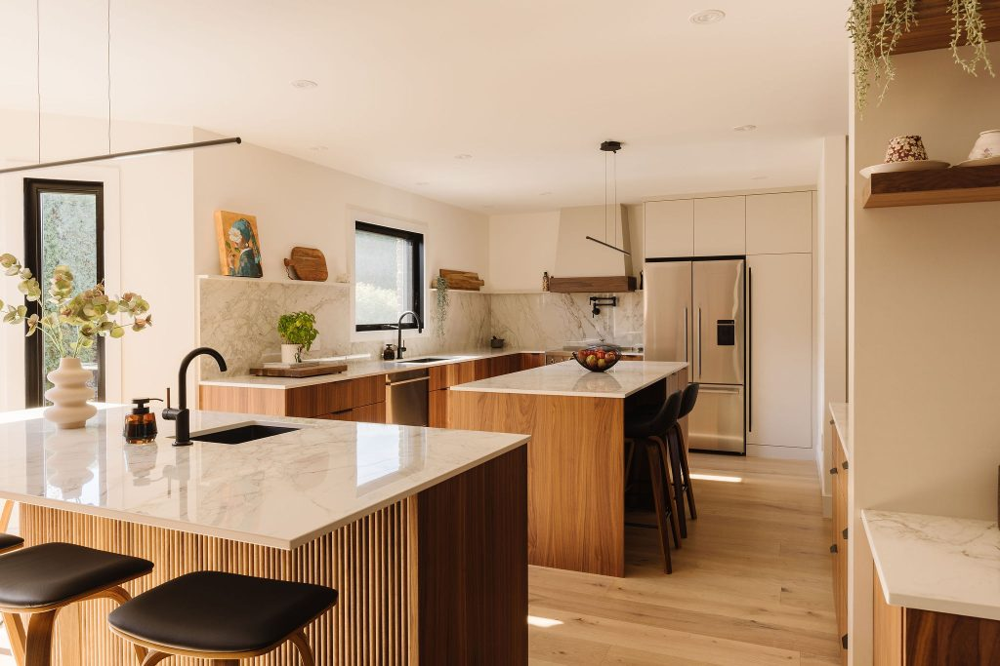
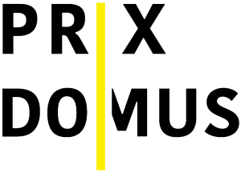
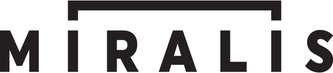
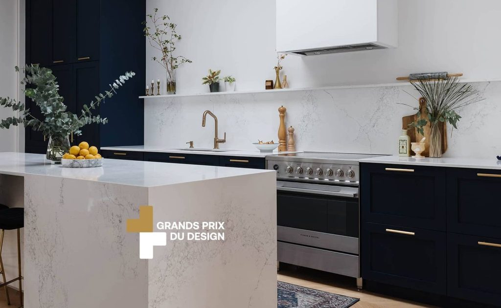
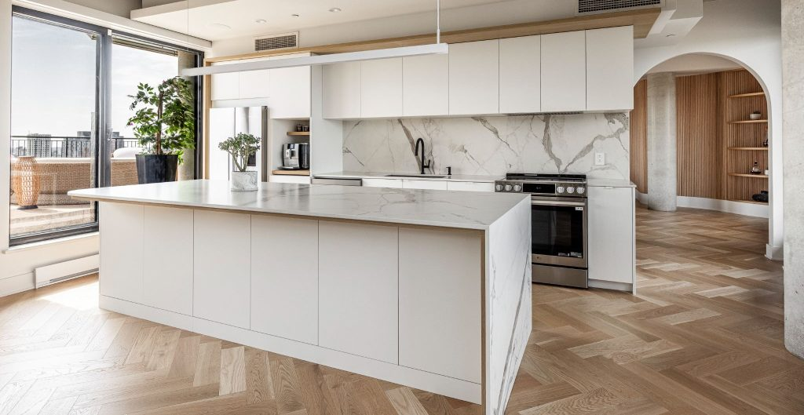
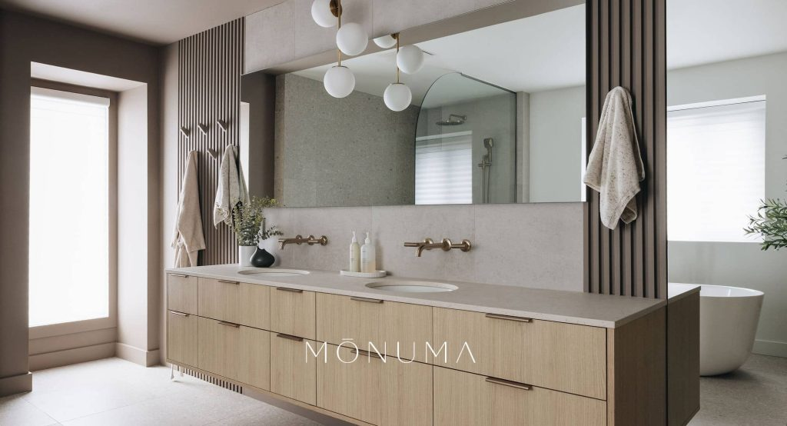
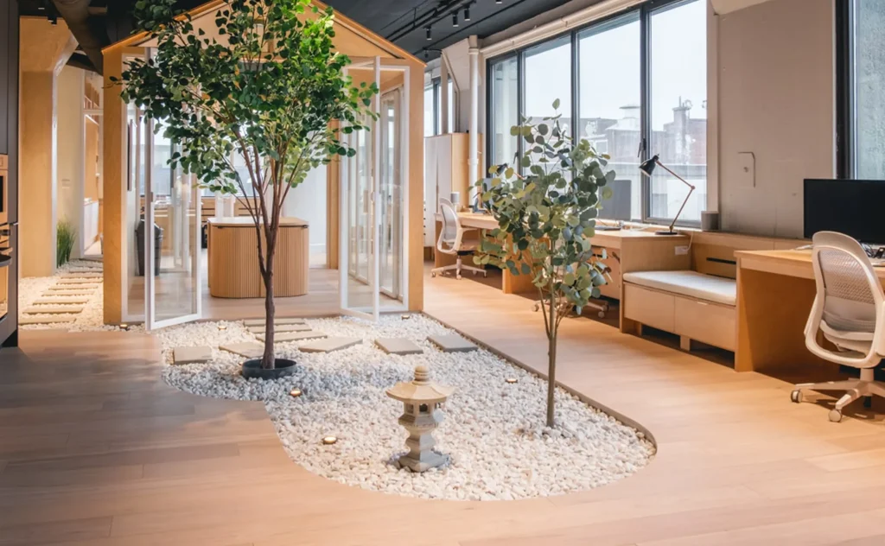
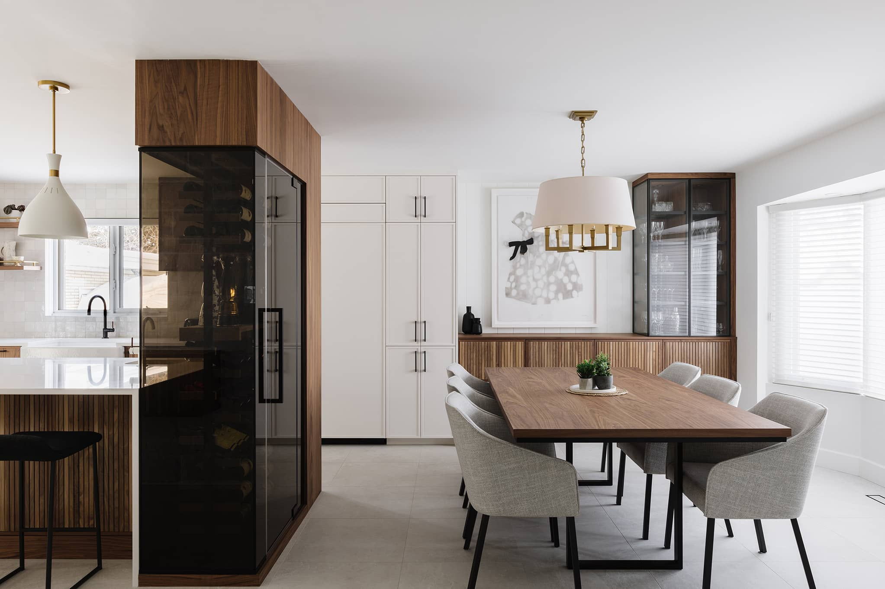
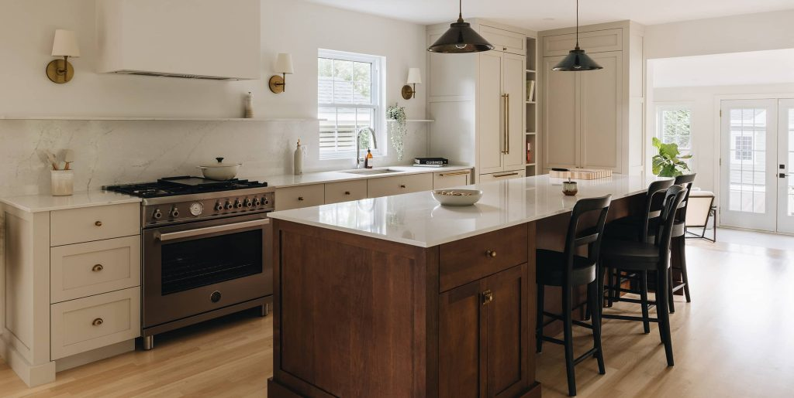

Vous livrez des projets primés depuis 1998. En ligne, on vous trouve à peine. Voici l'heure juste sur votre marketing, et le système que je bâtirais pour transformer votre réputation en projets. Du concret, pas des promesses.



Je vais être direct, par respect. Groupe Cartier est parmi les meilleures firmes de rénovation haut de gamme à Montréal. Mais le marketing n'a jamais été le travail de personne chez vous. Ça paraît.
Les signaux, observés sur vos plateformes :
« Designer de cuisine haut de gamme à Montréal » mène à vos concurrents. Même chose dans ChatGPT et Perplexity.
Vos avis Google et Houzz sont rares par rapport à tout ce que vous livrez. Le profil Houzz semble figé.
Beau site, mais pas de blogue, pas de référencement travaillé, une dette technique qui traîne.
Instagram vit, LinkedIn dort, et le lien TikTok du site ne mène nulle part.
Vos prix restent sur une page « à propos ». Jamais transformés en contenu ni en preuve.
Une réno se décide sur des mois. Entre le premier clic et la signature, rien n'entretient la relation.
On ne parle pas à tout le monde. Voici le client type qui achète une rénovation clé en main haut de gamme. Tout le contenu et le démarchage se calibrent sur lui.
Vendre une réno à six chiffres, c'est répondre à des questions et lever des peurs avant même le premier appel. Voici ce qui se passe dans la tête de votre client.
Ce sont vos mots-clés, vos titres d'articles et vos publicités. Répondre à ces questions, c'est se faire trouver.
La peur du dépassement. Il veut de la transparence, pas une mauvaise surprise à mi-chantier.
Un chantier qui traîne bouleverse sa vie de famille. Les délais tenus sont un argument de vente.
Il laisse des inconnus dans sa maison. Les avis, les garanties et un seul interlocuteur le rassurent.
Il a peur de se faire imposer un style. Les rendus 3D et un portfolio varié répondent à ça.
Un projet à six chiffres se paie rarement comptant. Comprendre le financement, c'est savoir parler budget et lever l'objection prix : épargne, refinancement hypothécaire, marge de crédit hypothécaire (HELOC), ou prêt rénovation. Un partenariat avec un courtier hypothécaire peut même devenir un canal de références.
Google Analytics, Search Console et Trends pour voir ce que les gens cherchent; un outil SEO (Ahrefs ou SEMrush) pour les mots-clés; les rapports de Metricool et de Meta pour le social.
Un budget simple par canal, un coût par lead et un coût par projet suivis dans le CRM (GoHighLevel). On investit là où le retour est prouvé.
Des outils comme Houzz Pro ou Buildxact pour des devis clairs et rapides, qui rassurent le client sur son budget.
On écrit d'abord un article de fond, pensé pour ce que l'avatar tape dans Google. Puis on le décline en une semaine de contenu pour chaque réseau. Un effort de production, dix sorties.
Un post d'autorité et un carrousel. Le canal des donneurs d'ordre, des prescripteurs et du recrutement.
Une vidéo où un designer explique les coûts et le processus. Le référencement long terme : on cherche ça pendant des années.
Un carrousel, un reel avant/après, des stories. Le portfolio vivant.
Le post adapté et un album de projet. La communauté locale et la base des pubs géociblées.
Une version courte et accessible. Réactive le compte mort et va chercher la découverte.
Le meilleur de l'article dans le courriel mensuel, pour nourrir les prospects sur le long cycle.
Planifier et publier sur tous les réseaux depuis un seul endroit, avec les rapports. Fini le copier-coller manuel.
Capter les leads, courriels automatiques, suivi des projets, demandes d'avis automatisées après chaque livraison.
Production visuelle et montage à l'interne, sans dépendre d'une agence.
Ce ne sont pas des banques d'images. Ce sont vos propres réalisations. Chacune est une semaine de contenu qui dort. Le travail, c'est de les faire circuler.

Projet St-Joseph
Projet Gorini
Projet Olympia
Projet Rosa
Projet Sgambato
Cuisine sur mesureLe contenu qui convertit en rénovation n'est pas générique. Voici ce que je produirais, sur le terrain, avec vos vrais projets.
Une caméra fixe sur un projet complet. Un mois de travaux en 60 secondes. Hypnotique, partageable, et ça prouve le sérieux de l'exécution.
Le format le plus performant en rénovation. Photo et vidéo, même angle, la révélation.
Le client raconte son expérience dans l'espace fini. Rien ne vend mieux qu'un vrai client ému par sa cuisine.
Un designer fait le tour d'une réalisation et explique ses choix. Parfait pour YouTube et pour l'autorité.
L'ébéniste à l'atelier, le chargé de projet sur le chantier. On achète des gens autant qu'un service.
Les 5 étapes du clé en main en vidéo, pour rassurer celui qui a peur du chaos.
Pour un achat à six chiffres, l'avis des autres est le facteur no 1 de décision. C'est votre plus grande lacune, donc votre gain le plus rapide.
On ne mise pas sur un seul canal. L'inbound vous rend trouvable pour ceux qui cherchent déjà. L'outbound va chercher les bonnes personnes avant qu'elles ne cherchent. Les deux tournent en même temps.
Le contenu vous rend trouvable. Le démarchage va chercher les bonnes personnes activement. Le cœur du rôle : parler à assez de monde pour faire monter le flux de projets.
Référents naturels de projets clé en main. Devenir leur exécutant de confiance.
Ils croisent chaque semaine des acheteurs qui vont rénover, dans vos quartiers.
La source la moins chère et la plus qualifiée. Un programme de références structuré.
Votre partenariat privilège devient un canal de visibilité et un argument.
Pour accélérer, en parallèle du contenu : une campagne de génération de leads. Trois créatifs sur vos réalisations, un ciblage précis, une page qui transforme le clic en consultation.
Le clic n'atterrit pas sur l'accueil, mais sur une page conçue pour une seule chose : obtenir une consultation. Je l'ai construite, à votre image.
Vous vendez à des propriétaires (B2C), mais aussi, à travers les prescripteurs, à un réseau d'affaires (B2B). Chacun a ses canaux, ses campagnes et ses outils. Voici du réel, pas des concepts.
Chaque lead entre dans le CRM et suit le même chemin : capté, qualifié (budget, échéancier, décideur, portée), relancé, puis passé à l'équipe pour l'appel découverte. On mesure le coût par lead et le taux de projets signés.
Je pense ce volet comme un chargé de projet : je remonte à la source des mandats. Vous avez déjà vos façons de faire. L'idée n'est pas de les remplacer, mais d'ajouter les canaux que vous n'exploitez pas encore.
Chez Maple Syrup From Canada, j'ai fait exactement ça : trouver des acheteurs B2B avec Apollo et LinkedIn, participer à des foires et des missions commerciales à l'international, et représenter l'entreprise en personne. Le démarchage, la représentation et la négociation, je les ai déjà menés.
Bouche-à-oreille, références de clients satisfaits, relations avec des architectes et des designers, le showroom, Houzz, les clients qui reviennent. Ça marche, et ça reste le cœur. On le garde, et on le systématise : programme de références et routine d'avis. Ensuite, on ajoute du neuf.
Nouveaux condos et projets mixtes : unités modèles, design-build, aménagements des espaces communs.
Chaque changement de locataire commercial, c'est un local à réaménager. Récurrent, et peu sollicité.
Sous-traitance de votre menuiserie et de votre ébénisterie sur mesure sur leurs gros chantiers.
Architectes, designers, courtiers haut de gamme. Devenir leur exécutant de confiance.
Un client résidentiel, c'est un projet. Un franchisé qui aime son aménagement, c'est cinq, dix, vingt emplacements presque identiques. Le meilleur ratio effort / flux de projets qui existe.
Palais des congrès, en mars. Plus de 370 exposants, des milliers de propriétaires. Exposer ou réseauter.
Le Salon du design de Montréal : plus de 20 000 pros et gens d'affaires. Le terrain des prescripteurs.
Palais des congrès, en février. L'autre grand rendez-vous habitation de la ville.
Vous y êtes déjà primés. On capitalise : présence, contenu, relations de presse.
Pour prouver le point, j'ai fait le travail. Voici de vraies entreprises en expansion à Montréal, avec le décideur à viser, leurs projets, pourquoi c'est un fit et comment les approcher. Recherche à partir d'informations publiques (juillet 2026); les coordonnées exactes se confirment via LinkedIn Sales Navigator et Apollo.
Présenté comme démonstration, à partir de sources publiques. Une fois en poste, la prochaine étape serait d'enrichir chaque fiche (nom et courriel du décideur) et de lancer la séquence.
Pas une liste d'idées en vrac. Une séquence, par trimestre, avec l'objectif et le résultat visé. On bâtit les fondations avant de mettre de la pression sur l'acquisition.
Un bon système commence par de bonnes questions. Avant de proposer quoi que ce soit, voici ce que je voudrais comprendre avec vous.
Deux documents prêts à l'emploi, que votre équipe pourrait utiliser dès demain.
Ma lettre, mon CV et cette présentation, au même endroit. Rien à chercher, rien à télécharger en dix fichiers.